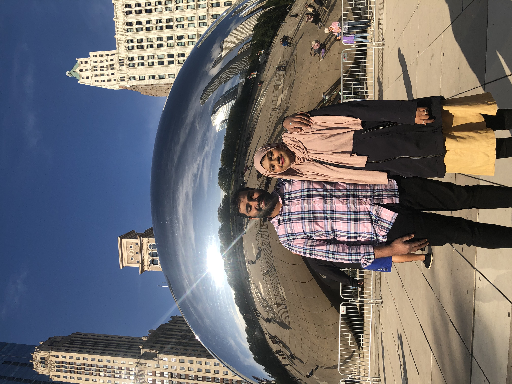
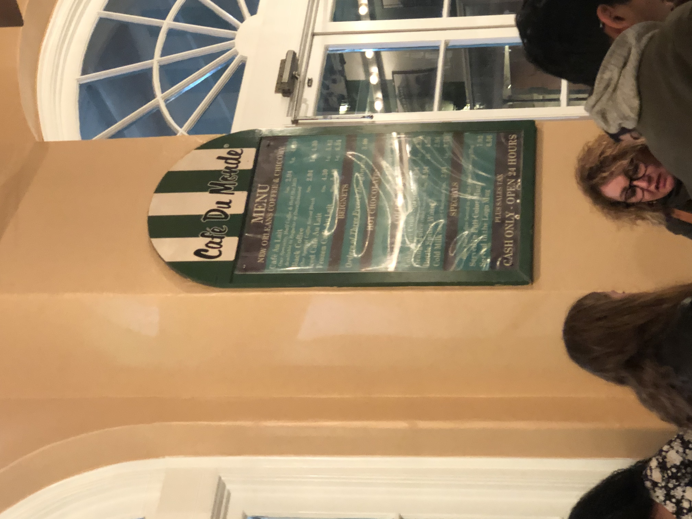
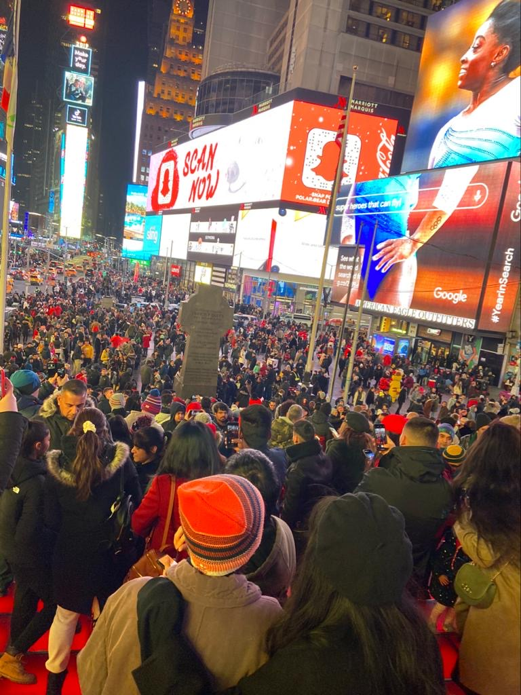
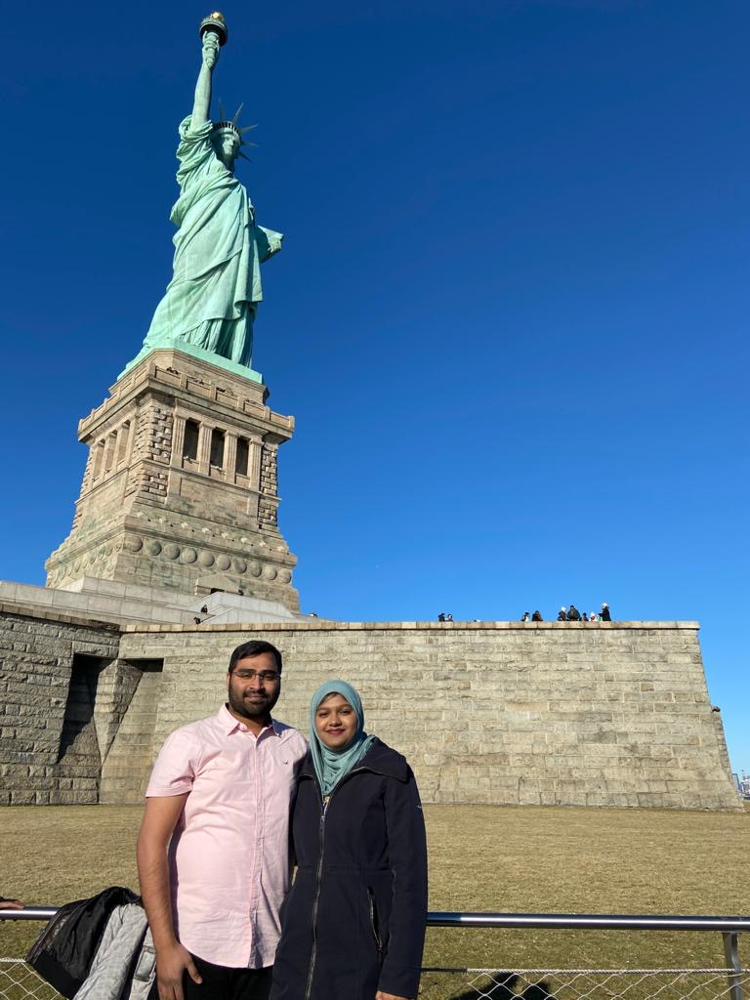
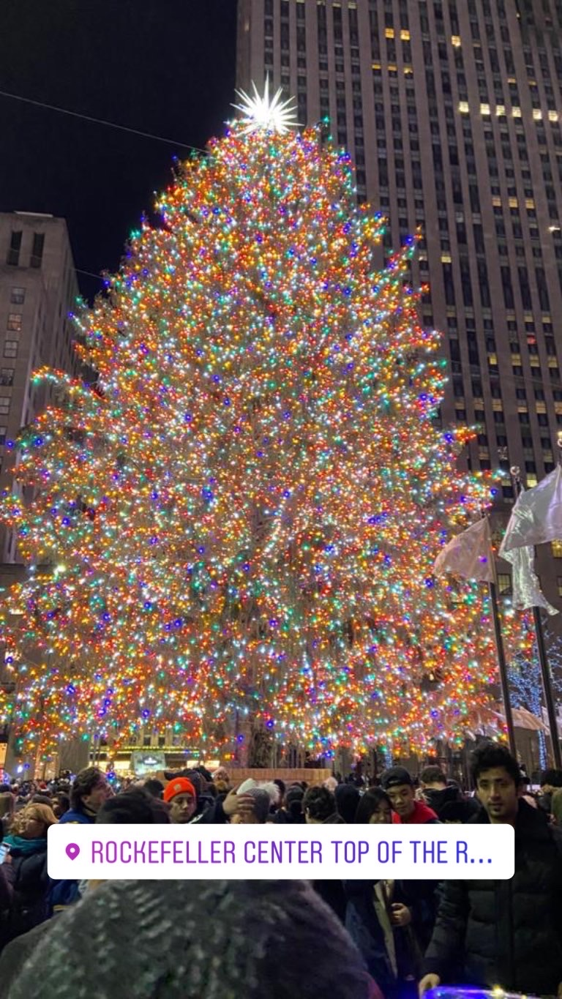

Hello everyone! My name is Samiya Tazeen. Below you will find the following sections about me:
My Personal Life
I was born and raised in Hyderabad, India. I moved to the United States with my parents and siblings when I was at the age of 13.
I have a older sister and a fraternal twin sister
who is five minutes older than me. I also have one neice and one nephew.
I have only lived in St. Louis since moving to the US. Moving to the US was a big change for me and my family especially
the culture
and the lifestyle. It was also life changing because the US has provided us with the best healthcare, education,
and has made my family more financially stable. I come from a religious background, so faith is highly important to me.
Two years ago, I was arranged married to my husband and it was the best decision I have ever made. I am truly blessed to have found him.
I studied in a Catholic School in Hyderabad named St. Ann’s Girls High School from Kindergarten till 8th grade.
After moving to the US, I attended Pattonville High School from 9th grade to 12th grade.
I joined St. Louis Community College to take all the pre-requisite classes required for a Biochemistry/Biotechnology degree.
During my time at STLCC, I changed my major from pharmacy to Biochemistry.
Two and a half years later, I graduated with an Associate’s degree from STLCC. In May 2019, I completed my Bachelor’s in Biotechnology/Biochemistry from University of Missouri St. Louis.
After graduating from college, my interest grew for
coding when I was home looking for jobs and I saw my husband work on applications for his company.
I loved the flexibility of his job, work from home, and the financial rewards of his job.
Few months later, I learned about LaunchCode through my husband’s co-worker and I applied as soon as the class was available.
I was declined the first time I applied for LC101, but luckily I got accepted the second time around.
I have been amazed at what I have learned so far and I am excited to learn more as I go along in this course.

After my marriage, I have really enjoyed taking road trips to different states with my husband.
We have been married for a year and a half and so far we have visited Chicago, New Orleans, New York, New Jersey, and Canada (Toronto).
During these visits, we have been to the Niagara Falls, Statue of Liberty, Sears Tower, French Quarters, and Times Square.
To de-stress ourselves during the pandemic, My husband and I spend our time cooking delicious Indian foods, barbecuing in the backyard,
visiting State parks, and walking almost everyday at a local park.
|

My husband and I at the Cloud Gate in Chicago
|

Cafe du Monde located in New Orleans is known for its French Beignets
|

Pre-Covid Times in Times Square December 2019
|
Niagara Falls 2019
|
|

My husband and I at the Statue of Liberty
|
 Johnson's Shut Ins with my family in July 2020
Johnson's Shut Ins with my family in July 2020
|

This tree was 46 feet wide and 77 feet tall
|